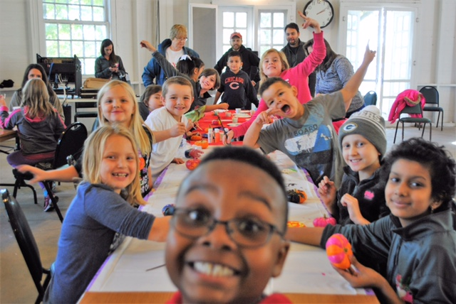

<link rel="import" href="../../../bower_components/iron-accordions/iron-accordions.html">
<link rel="import" href="../../../bower_components/iron-media-query/iron-media-query.html">
<link rel="import" href="../../elements/toth-schedule/toth-schedule.html">
<link rel="import" href="../../elements/toth-splash/toth-splash.html">
<link rel="import" href="../../elements/toth-talent/toth-talent.html">
<link rel="import" href="../../style/toth-shared-style.html">

<dom-module id="toth-page-index">
	<template>
		<style include="toth-shared-style">
			:host {
				display: block;
			}

			#intro {
				font-size: 22px;
				@apply --layout-center-center;
				@apply --layout-vertical;
				background-color: #fff;
			}

			#intro-content {
				display: flex;
				@apply --layout-vertical;
				max-width: 100%;
			}

			#attend {
				font-size: 22px;
				@apply --layout-center-center;
				@apply --layout-vertical;
				background-color: #fff;
			}

			#attend-content {
				display: flex;
				@apply --layout-vertical;
				max-width: 100%;
			}

			#stream {
				background-image: url('../../../images/orange-dots.jpg');
				width: 100%;
				min-height: 500px;
			}

			#stream h1 {
				background-color: #fff;
				color: var(--toth-orange);
				text-transform: uppercase;
				padding: 5px 70px;
			}

			#cta {
				background-color: #fff;
			}

			.cta-info {
				font-size: 38px;
				text-align: center;
				font-weight: 600;
				margin-bottom: 29px;
			}

			#campkids {
				@apply --layout-center;
				padding: 30px;
			}

			#campkids img {
				display: flex;
				box-shadow: 4px 4px 4px #ccc;
				border: 1px solid #000;
				width: 100%;
				max-width: 500px;
				margin: 0 auto;
			}

			#esaimg {
				@apply --layout-center;
				padding: 30px;
			}

			#esaimg img {
				display: flex;
				box-shadow: 4px 4px 4px #ccc;
				border: 1px solid #000;
				width: 100%;
				max-width: 300px;
				margin: 0 auto;
			}

			#campabout {
				line-height: 1.5;
				font-weight: 600;
				padding: 0 15px;
			}

			#campabout p {
				margin-top: 15px;
			}

			#esaabout {
				line-height: 1.5;
				font-weight: 600;
				padding: 0 15px;
			}

			#esaabout p {
				margin-top: 15px;
			}

			#intro-footer {
				color: var(--toth-orange);
				font-size: 26px;
				text-align: center;
				padding: 0 20px;
			}

			#stream-main {
				@apply --layout-vertical;
				max-width: 1170px;
			}

			#stream-main h2 {
				color: #fff;
				font-size: 28px;
				font-weight: 600;
				text-shadow: 3px 3px 2px rgba(0, 0, 0, 0.4);
				text-align: center;
				text-transform: uppercase;
			}

			#stream-events {
				margin: 0 20px;
			}

			#stream-people {
				@apply --layout-center-center;
				display: flex;
				flex-flow: row wrap;
				align-content: flex-start;
				padding: 0 20px;
			}

			.event-label {
				background-color: #fff;
				font-size: 29px;
				text-transform: uppercase;
				font-weight: 600;
				width: 100%;
				cursor: pointer;
				padding: 8px 0 8px 25px;
			}

			.event-info {
				background-color: #f1e4dc;
				width: 100%;
				font-size: 18px;
				font-weight: 600;
				padding: 15px 20px;
				box-sizing: border-box;
			}

			toth-talent {
				margin-bottom: 40px;
				margin-right: 8px;
			}

			iron-accordion {
				@apply --layout-vertical;
				width: 100%;
				margin-bottom: 12px;
			}

			@media (min-width: 1050px) {
				#intro-content {
					@apply --layout-horizontal;
				}

				#attend-content {
					@apply --layout-horizontal;
				}

				#campkids {
					padding: 0 30px;
				}

				#campkids img {
					width: 100%;
				}

				#esaimg {
					padding: 0 30px;
				}

				#esaimg img {
					width: 100%;
				}

				#campabout {
					width: 550px;
					padding-left: 0;
				}

				#esaabout {
					width: 550px;
					padding-left: 0;
				}

				#stream-main {
					@apply --layout-horizontal;
				}

				#stream-events {
					min-width: 445px;
					width: 445px;
					max-width: 445px;
					margin: 0 20px 0 16px;
				}

				#stream-people {
					display: flex;
					flex-flow: row wrap;
					align-content: flex-start;
					padding: 0;
				}
			}
		</style>

		<iron-media-query query="(min-width: 1050px)" query-matches="{{wideLayout}}"></iron-media-query>

		<section id="splash">
			<toth-splash></toth-splash>
		</section>

		<section id="intro">
			<h1>What <em><b>is</b></em> Tip of the Hats?</h1>
			<div id="intro-content">
				<div id="campkids">
					
				</div>

				<p id="campabout">
					Tip of the Hats is a charity event hosted and supported by a group of friends originating
					from the <em>Team Fortress 2</em> community. Since 2013, it has raised over $750,000
					for Children's Oncology Services, Inc., which offers camps and other educational and excursion
					programs throughout the year that allow children with cancer to just be kids. With your help,
					COSI can offer attendance to kids at little to no cost to their families.
				</p>
			</div>

			<p id="intro-footer">
				"Chemotherapy may have cured my cancer, but camp definitely cured my spirit." - Stephanie
			</p>
		</section>

		<section id="stream">
			<h1>Schedule</h1>

			<toth-schedule></toth-schedule>

			<div id="stream-main">
				<!--<div id="stream-events">-->
					<!--<h2>Events and Happenings</h2>-->
					<!--<iron-accordions selected="0">-->
						<!--<template is="dom-repeat" items="[[events]]" as="event">-->
							<!--<iron-accordion opened="[[!wideLayout]]">-->
								<!--<div class="event-label" header>[[event.label]]</div>-->
								<!--<div class="event-info">[[event.info]]</div>-->
							<!--</iron-accordion>-->
						<!--</template>-->
					<!--</iron-accordions>-->
				<!--</div>-->

				<div>
					<h2>Scheduled In-Studio Appearances</h2>
					<div id="stream-people">
						<template is="dom-repeat" items="[[talent]]">
							<toth-talent name="[[item.name]]"></toth-talent>
					 </template>
					</div>
				</div>
			</div>
		</section>

		<section id="cta">
			<h1>TIP OF THE HATS RETURNS OCT 11th @ 11am CDT!</h1>
		</section>
	</template>

	<script src="toth-page-index.js"></script>
</dom-module>
